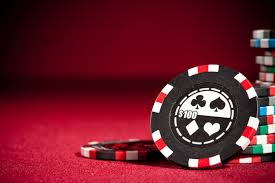

- 
There are three major types of articles that my clients have wanted over the past couple of years when it comes to promoting online casinos and other online gambling sites. My clients usually want online gambling news articles, casino game reviews and online casino reviews written. When writing news articles, it’s important to offer actual analysis of what’s happening to give value to readers instead of just rehashing news stories from various sources. If you want casino game reviews written, then you’ll like that I write things with a slant towards having the reader try the game for themselves to increase conversions. When I write online casino reviews, it’s the same kind of situation. My writing for online casinos is geared towards trying to get conversions for weeks, months and years to come. Because the online casino content I write is of exceptional quality, search engines will want to keep the content around for a very long time, and this allows you to make even more money.